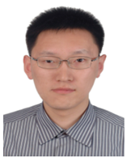
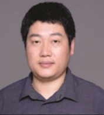
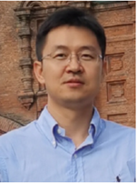

|
Multi-view Learning and Its Applications in Computer Vision |
|
In the era of big data, multiple features and modalities are often used to describe visual data from different aspects in computer vision community. For instance, in image/video processing, different feature descriptors such as SIFT, LBP, HOG and GIST are usually adopted to represent multimedia data such as images, video frames and social media contents. In addition, various sensors can capture data from a variety of domains or modalities, such as RGB and depth data during video/image acquisition, Magnetic Resonance Imaging (MRI), positron emission tomography (PET) and Single Nucleotide Polymorphisms (SNP) in medical data processing. These data can be uniformly regarded as multi-view data. In multi-view data, different views often contain both complementary and consensus information. Fully using multi-view information is critical for enhancing learning tasks, which derives many multi-view learning methods in computer vision community. During the past few decades, although various multi-view learning methods have been put forward for computer vision tasks and gained great success, there are still many unsolved issues which need to be further investigated. For example, missing or noisy values often exist among multi-view data, and the big data era also brings the scalability problem for handling large-scale computer vision data, to name just a few. In addition, it is relatively easy to incorporate multiple views into deep learning, but there is much less straight forward to interpret the contributions of different views. This is unlike the shallow case (e.g., multiple kernel learning). Furthermore, the hierarchical setup of deep learning offers possibilities to learn weights at multiple levels, early and late fusion and everything in between. While some traditional multi-view learning works are well understood theoretically, there is little or no significant learning theory for deep multi-view learning. Therefore, we propose to organize this workshop which focuses on some advanced multi-view learning techniques and theory for computer vision tasks. In this workshop, we have invited several top scholars to give talks about some frontier problems of multi-view learning on computer vision. Organizers:
|
| Invited speakers: | |
| Feiping Nie, Professor, Northwestern Polytechnical University, China. Feiping Nie received the Ph.D. degree in Computer Science from Tsinghua University, China in 2009, and currently is full professor in Northwestern Polytechnical University, China. His research interests are machine learning and its applications, such as pattern recognition, data mining, computer vision, image processing and information retrieval. He has published more than 100 papers in the following journals and conferences: TPAMI, IJCV, TIP, TNNLS, TKDE, ICML, NIPS, KDD, IJCAI, AAAI, ICCV, CVPR, ACM MM. His papers have been cited more than 20000 times and the H-index is 84. He is now serving as Associate Editor or PC member for several prestigious journals and conferences in the related fields. | |
|  | Ran He, Professor, NLPR, Institute of Automation, Chinese Academy of Sciences, China. Ran He received the B.E. degree in Computer Science from Dalian University of Technology, the M.S. degree in Computer Science from Dalian University of Technology, and Ph.D. degree in Pattern Recognition and Intelligent Systems from Institute of Automation, Chinese Academy of Sciences in 2001, 2004 and 2009, respectively. Since September 2010, Dr. He has joined NLPR where he is currently Professor. He currently serves as an associate editor of Neurocomputing (Elsevier) and serves on the program committee of several conferences. His research interests focus on information theoretic learning, pattern recognition, and computer vision. |
|  | Shiliang Sun, Professor, East China Normal University, China. Shiliang Sun received the B. E. degree from Beijing University of Aeronautics and Astronautics (BUAA), and the M. E. and Ph.D. degrees in Pattern Recognition and Intelligent Systems from Tsinghua University. In 2004, he was awarded Microsoft Fellowship. In 2007, he joined the Department of Computer Science and Technology, East China Normal University (ECNU), and founded the Pattern Recognition and Machine Learning (PRML) Research Group. From 2009 to 2010, he was a visiting researcher at the Centre for Computational Statistics and Machine Learning (CSML) and the Department of Computer Science, University College London (UCL). From March to April 2012, he was a visiting researcher at the Department of Statistics and Biostatistics, Rutgers University. In July 2014, he was a visiting researcher at the Department of Electrical Engineering, Columbia University. He was a program co-chair for ICONIP 2017 and is a member of the PASCAL (Pattern Analysis, Statistical Modelling and Computational Learning) network of excellence. |
|  | Changqing Zhang, Associate professor, Tianjin University, China. Changqing Zhang received the B.S. and M.S. degrees from the College of Computer, Sichuan University, Chengdu, China, in 2005 and 2008, respectively, and the Ph.D. degree in Computer Science from Tianjin University, China, in 2016. He is an associate professor in the College of Intelligence and Computing, Tianjin University. He has been a postdoc research fellow in the Department of Radiology and BRIC, School of Medicine, University of North Carolina at Chapel Hill, NC, USA. His current research interests include machine learning, computer vision and medical image analysis. |
|
Changsheng Li, Professor, Beijing Institute of Technology, China. Changsheng Li received the BE degree from the University of Electronic Science and Technology of China (UESTC), in 2008 and the PhD degree in pattern recognition and intelligent system from the Institute of Automation, Chinese Academy of Sciences, in 2013. He is a full Professor with the School of Computer Science and Technology, Beijing Institute of Technology. He also studied as a research assistant with The Hong Kong Polytechnic University in 2009-2010. After obtaining his PhD, he once worked with IBM Research-China and iDST, Alibaba Group, respectively. His research interests include machine learning, data mining, and computer vision. He has more than 30 refereed publications in international journals and conferences. |
@ACCV 2022. |